64 Classic Things in R
This chapter is a collection of basic base R code that I’ve used in my undergraduate intro stats class. Eventually, there will be a lot more commentary/ context. In the meantime however…
######## Levels of Measurement Examples
# Ratio Example
library(HistData) # loads the HistData package
data("Galton") # loads the Galton dataset
attach(Galton) # attaches the dataset
head(Galton, n=10) # First ten rows of data
#> parent child
#> 1 70.5 61.7
#> 2 68.5 61.7
#> 3 65.5 61.7
#> 4 64.5 61.7
#> 5 64.0 61.7
#> 6 67.5 62.2
#> 7 67.5 62.2
#> 8 67.5 62.2
#> 9 66.5 62.2
#> 10 66.5 62.2
hist(child) # Histogram hist(Galton$child) is the same, use if you do not want to attach the data file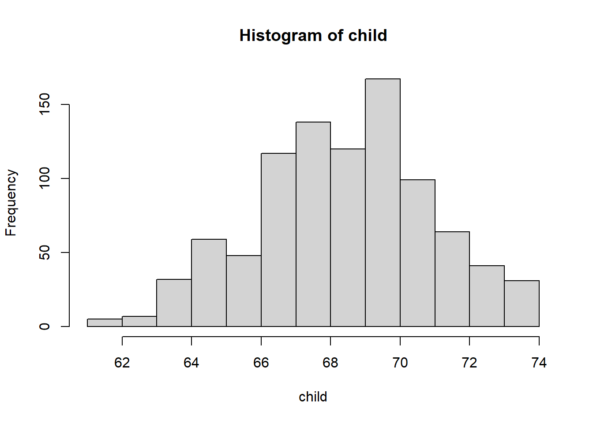
plot(density(child)) # Density Plot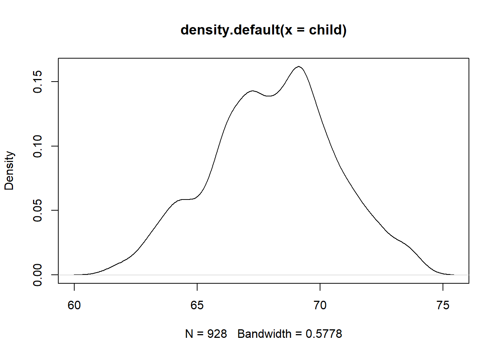
detach(Galton) # Remember to detach you dataset!
# Interval Example
library(datasets)
data("nottem")
nottem[1:10] # First ten rows of data
#> [1] 40.6 40.8 44.4 46.7 54.1 58.5 57.7 56.4 54.3 50.5
hist(nottem) # Histogram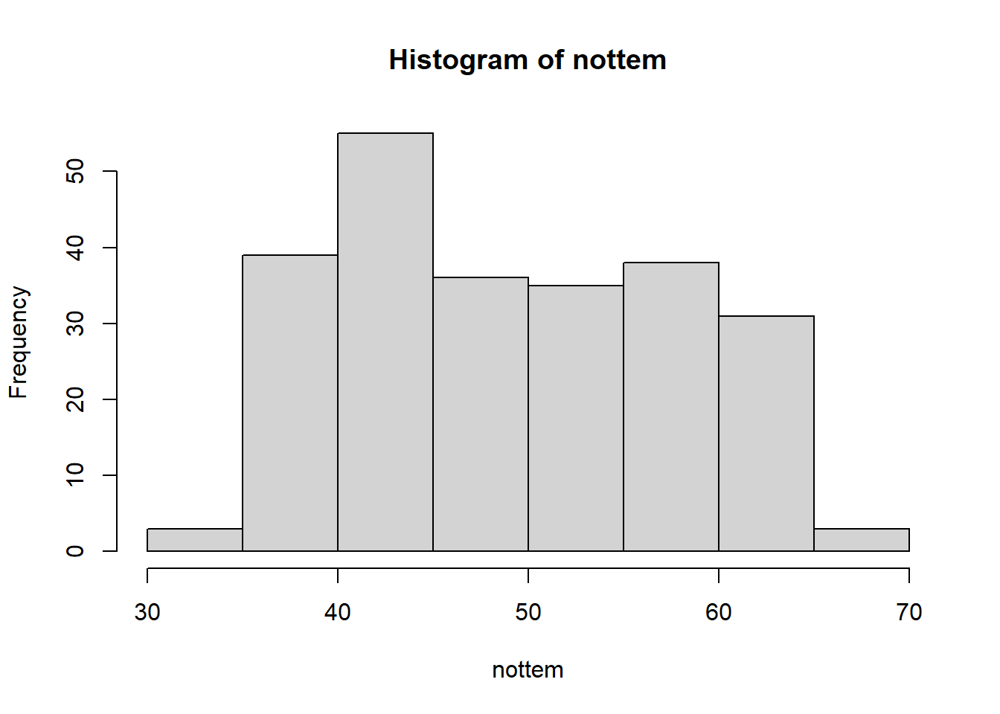
plot(density(nottem)) # Density Plot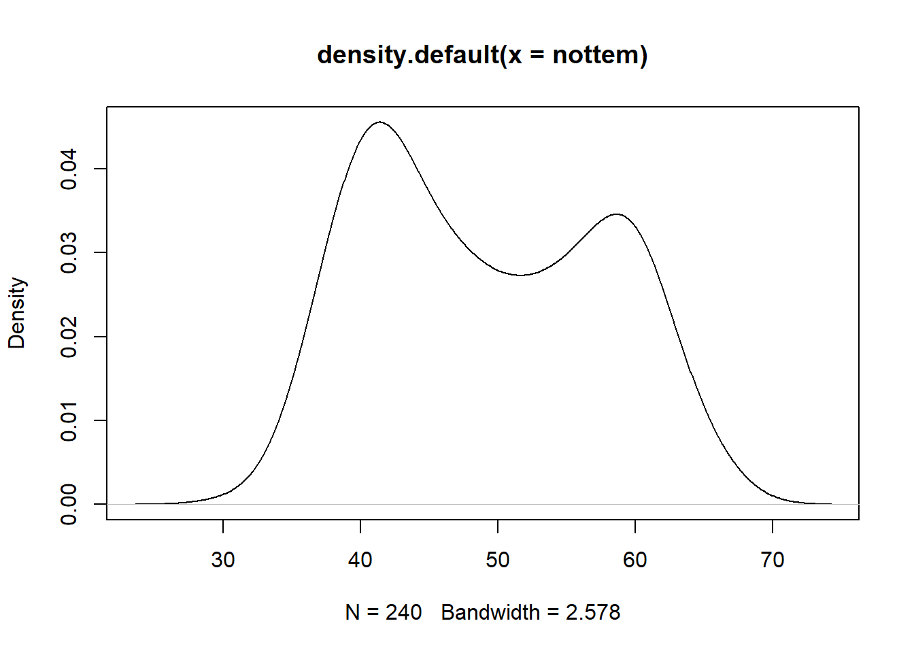
# Ordinal Example
library(ggplot2movies)
data(movies)
variable<-movies$rating
head(movies, n=10) # First ten rows of data
#> title year length budget rating votes r1 r2 r3 r4
#> 1 $ 1971 121 NA 6.4 348 4.5 4.5 4.5 4.5
#> 2 $1000 a Touchdown 1939 71 NA 6.0 20 0.0 14.5 4.5 24.5
#> 3 $21 a Day Once a Month 1941 7 NA 8.2 5 0.0 0.0 0.0 0.0
#> 4 $40,000 1996 70 NA 8.2 6 14.5 0.0 0.0 0.0
#> 5 $50,000 Climax Show, The 1975 71 NA 3.4 17 24.5 4.5 0.0 14.5
#> 6 $pent 2000 91 NA 4.3 45 4.5 4.5 4.5 14.5
#> 7 $windle 2002 93 NA 5.3 200 4.5 0.0 4.5 4.5
#> 8 '15' 2002 25 NA 6.7 24 4.5 4.5 4.5 4.5
#> 9 '38 1987 97 NA 6.6 18 4.5 4.5 4.5 0.0
#> 10 '49-'17 1917 61 NA 6.0 51 4.5 0.0 4.5 4.5
#> r5 r6 r7 r8 r9 r10 mpaa Action Animation Comedy Drama Documentary
#> 1 14.5 24.5 24.5 14.5 4.5 4.5 0 0 1 1 0
#> 2 14.5 14.5 14.5 4.5 4.5 14.5 0 0 1 0 0
#> 3 0.0 24.5 0.0 44.5 24.5 24.5 0 1 0 0 0
#> 4 0.0 0.0 0.0 0.0 34.5 45.5 0 0 1 0 0
#> 5 14.5 4.5 0.0 0.0 0.0 24.5 0 0 0 0 0
#> 6 14.5 14.5 4.5 4.5 14.5 14.5 0 0 0 1 0
#> 7 24.5 24.5 14.5 4.5 4.5 14.5 R 1 0 0 1 0
#> 8 4.5 14.5 14.5 14.5 4.5 14.5 0 0 0 0 1
#> 9 0.0 0.0 34.5 14.5 4.5 24.5 0 0 0 1 0
#> 10 4.5 44.5 14.5 4.5 4.5 4.5 0 0 0 0 0
#> Romance Short
#> 1 0 0
#> 2 0 0
#> 3 0 1
#> 4 0 0
#> 5 0 0
#> 6 0 0
#> 7 0 0
#> 8 0 1
#> 9 0 0
#> 10 0 0
hist(variable) # Histogram
plot(density(variable)) # Density Plot
# Nominal Example
library(vcd)
#> Loading required package: griddata(Arthritis)
Arthritis[1:10, ] # First ten rows of data
#> ID Treatment Sex Age Improved
#> 1 57 Treated Male 27 Some
#> 2 46 Treated Male 29 None
#> 3 77 Treated Male 30 None
#> 4 17 Treated Male 32 Marked
#> 5 36 Treated Male 46 Marked
#> 6 23 Treated Male 58 Marked
#> 7 75 Treated Male 59 None
#> 8 39 Treated Male 59 Marked
#> 9 33 Treated Male 63 None
#> 10 55 Treated Male 63 None
variable<-Arthritis$Treatment
hist(variable) # Histogram error
#> Error in hist.default(variable): 'x' must be numeric
barplot_fix<-prop.table(table(variable))
barplot(barplot_fix) # Sometimes, R is silly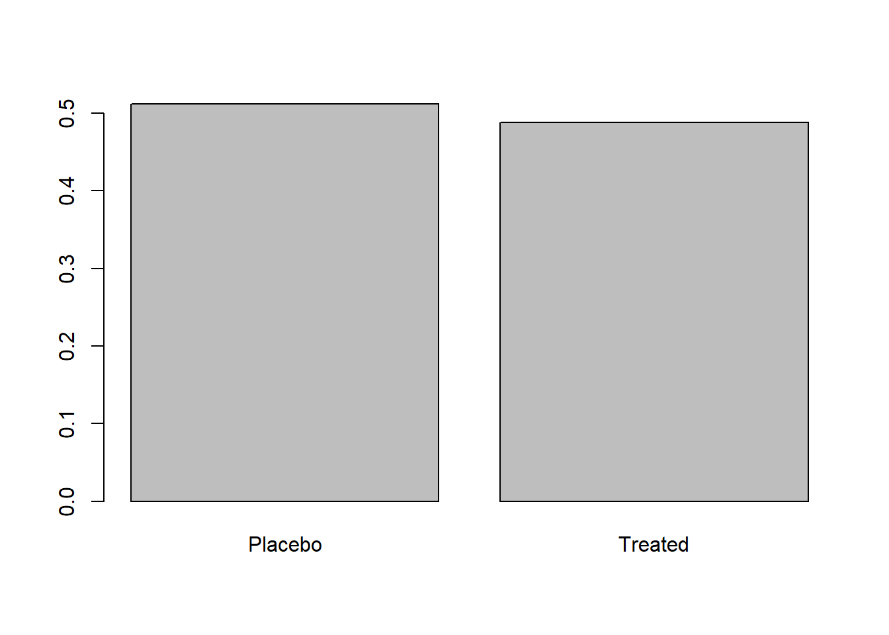
######## Summary Examples
# Bar chart
library(car)
#> Loading required package: carData
counts <- table(mtcars$gear)
barplot(counts, main="Car Distribution",
xlab="Number of Gears")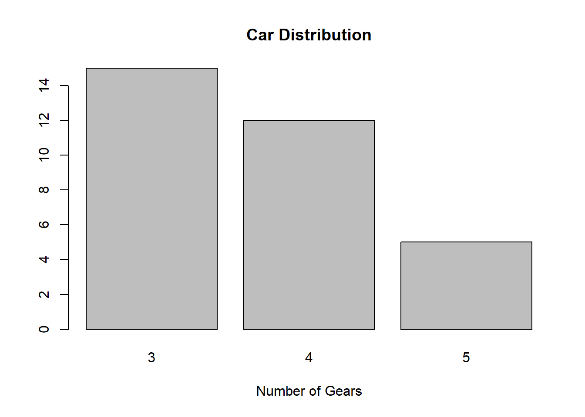
hist(counts)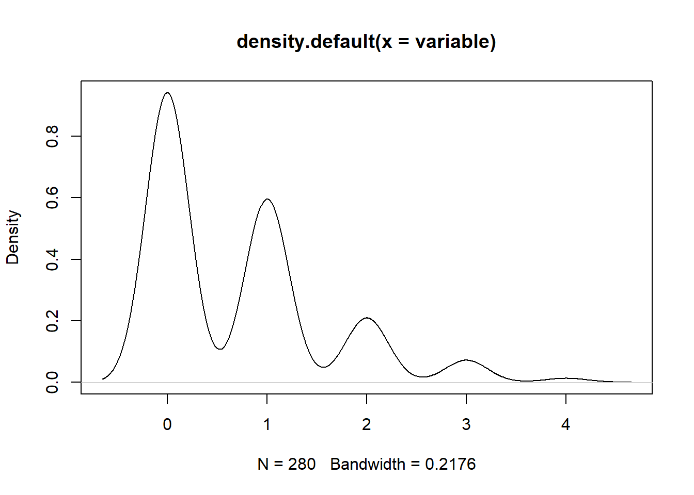
# Pie chart
mytable <- table(iris$Species)
lbls <- paste(names(mytable), "\n", mytable, sep="")
pie(mytable, labels = lbls,
main="Pie Chart of Species\n (with sample sizes)")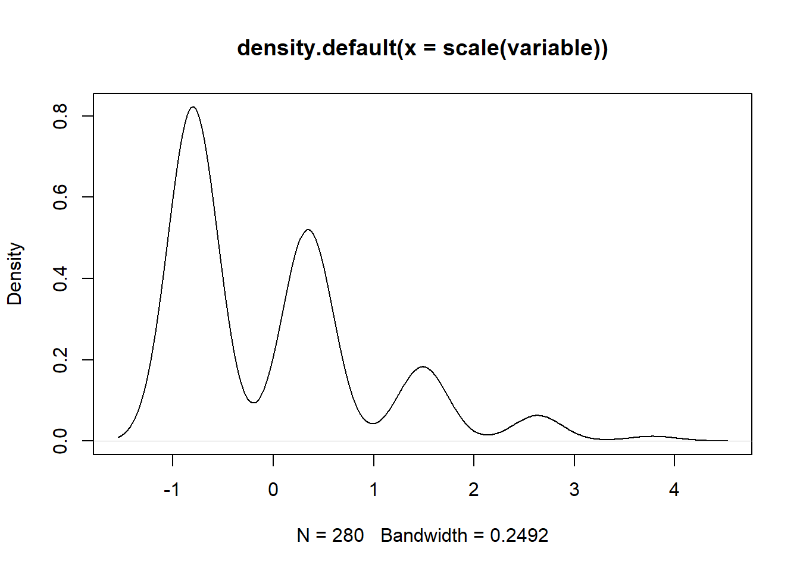
# Histogram
library(MASS)
variable<-cats$Bwt
hist(variable)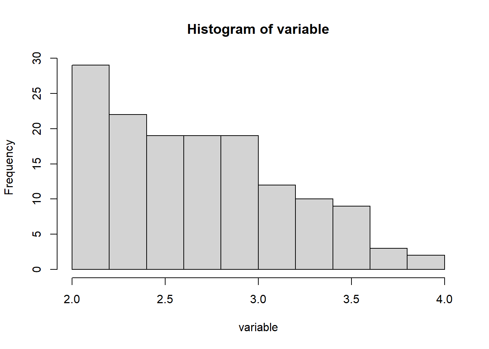
variable<-variable*2.2 #Convert to Imperial
hist(variable)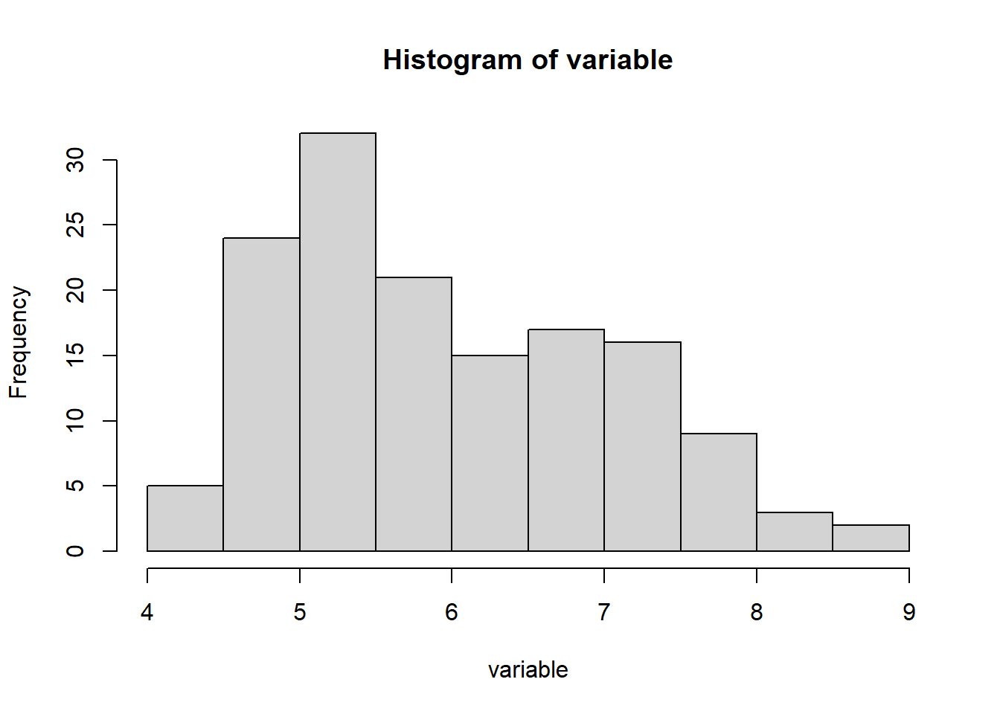
# Stem and Leaf plot
stem(faithful$eruptions,scale=1)
#>
#> The decimal point is 1 digit(s) to the left of the |
#>
#> 16 | 070355555588
#> 18 | 000022233333335577777777888822335777888
#> 20 | 00002223378800035778
#> 22 | 0002335578023578
#> 24 | 00228
#> 26 | 23
#> 28 | 080
#> 30 | 7
#> 32 | 2337
#> 34 | 250077
#> 36 | 0000823577
#> 38 | 2333335582225577
#> 40 | 0000003357788888002233555577778
#> 42 | 03335555778800233333555577778
#> 44 | 02222335557780000000023333357778888
#> 46 | 0000233357700000023578
#> 48 | 00000022335800333
#> 50 | 0370
######## Central Tendency
library(pscl)
#> Classes and Methods for R developed in the
#> Political Science Computational Laboratory
#> Department of Political Science
#> Stanford University
#> Simon Jackman
#> hurdle and zeroinfl functions by Achim Zeileis
data(prussian)
variable<-prussian$y #horse kick fatality by year
# Mean
mean(variable)
#> [1] 0.7
#Median
median(variable)
#> [1] 0
#Mode
mode(variable) # That's not mode!
#> [1] "numeric"
# Function to examine mode
Mode <- function(x) {
ux <- unique(x) #finds all unique values
ux[which.max(tabulate(match(x, ux)))] #returns the value which is most frequent
}
Mode(variable)
#> [1] 0
## summary
hist(variable)
library(Hmisc)
#> Loading required package: lattice
#> Loading required package: survival
#> Loading required package: Formula
#> Loading required package: ggplot2
#>
#> Attaching package: 'Hmisc'
#> The following objects are masked from 'package:base':
#>
#> format.pval, units
describe(variable)
#> variable
#> n missing distinct Info Mean Gmd
#> 280 0 5 0.828 0.7 0.8752
#>
#> lowest : 0 1 2 3 4, highest: 0 1 2 3 4
#>
#> Value 0 1 2 3 4
#> Frequency 144 91 32 11 2
#> Proportion 0.514 0.325 0.114 0.039 0.007
######## Spread
# Range
range(variable)
#> [1] 0 4
max(variable) -min(variable)
#> [1] 4
# 5 Number Summary / Quartiles
summary(variable)
#> Min. 1st Qu. Median Mean 3rd Qu. Max.
#> 0.0 0.0 0.0 0.7 1.0 4.0
# Variance
var(variable)
#> [1] 0.763
# Standard Deviation
sqrt(var(variable))
#> [1] 0.873
sd(variable)
#> [1] 0.873
################ Rescaling
variable<-movies$rating
scale(variable)[1:10]
#> [1] 0.3008 0.0432 1.4598 1.4598 -1.6309 -1.0514 -0.4075 0.4940 0.4296
#> [10] 0.0432
plot(density(variable)) # no scaling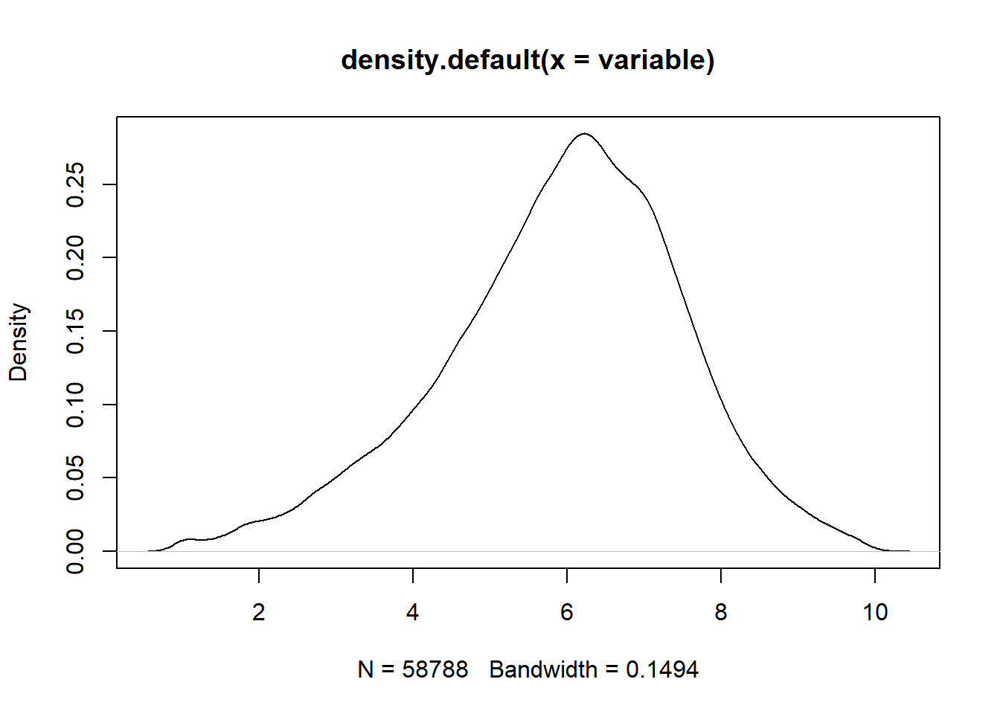
plot(density(scale(variable))) # with scaling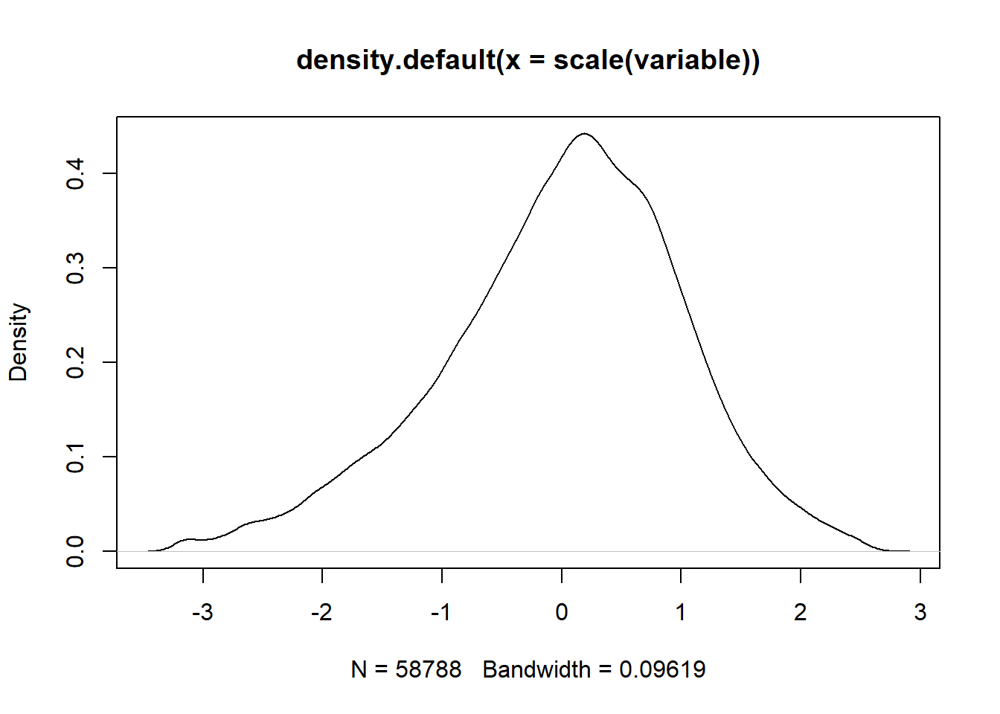
## bandwidth part of the smoothing method -- is a bit of a function of standard deviation
#### Normal Distribution
# Display the normal distributions with various means
x <- seq(-80, 80, length=1000)
hx <- dnorm(x)
colors <- c("red", "blue","green", "green", "gold", "black")
plot(x, hx, type="l", lty=2, xlab="x value",
ylab="Density", main="Comparison of normal Distributions",xlim=c(-5, 7))
location<-c(2,4,-2)
for (i in 1:3){
lines(x, dnorm(x,mean=location[i]), lwd=1, col=colors[i])
}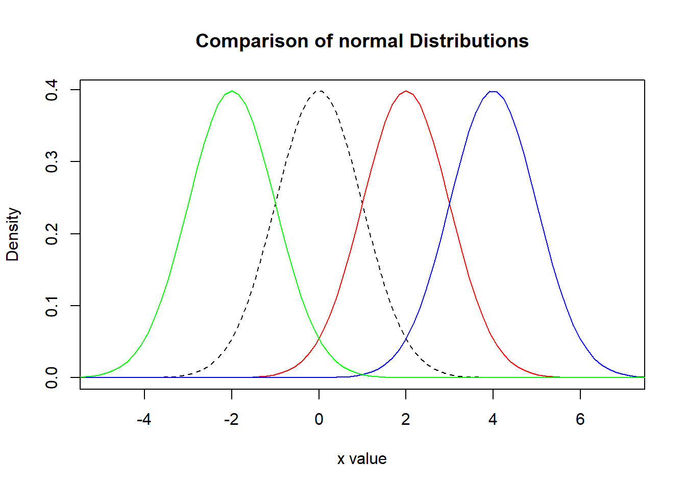
# Display the normal distributions with various standard deviations
plot(x, hx, type="l", lty=2, xlab="x value",
ylab="Density", main="Comparison of normal Distributions",xlim=c(-10, 10))
for (i in c(.5,2,4,6)){
lines(x, dnorm(x,sd=i), lwd=1, col=colors[i])
}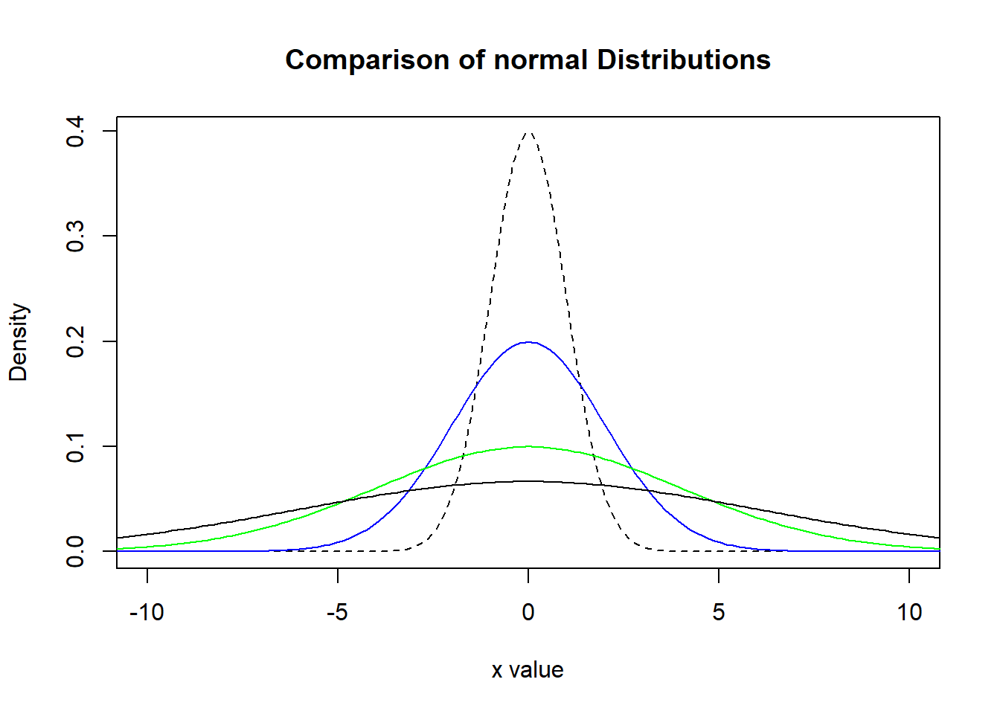
#### Z-Score Problem
# Data
IQ <-c(
114,
130,
74,
100,
120,
112,
104,
132,
107,
89,
111,
103,
102,
128,
98,
91,
118,
96,
114,
119,
112,
114,
86,
112,
103,
72,
93,
105,
111,
108,
103)
# Stem plot
stem(IQ,scale=1)
#>
#> The decimal point is 1 digit(s) to the right of the |
#>
#> 7 | 24
#> 8 | 69
#> 9 | 1368
#> 10 | 023334578
#> 11 | 1122244489
#> 12 | 08
#> 13 | 02
# Mean and SD
mean(IQ)
#> [1] 106
sd(IQ)
#> [1] 14.3
# What proportion of scores are within one standard deviation of the mean?
## 1 SD above
above1<- mean(IQ)+ 1*sd(IQ)
## 1 SD below
below1<- mean(IQ)- 1*sd(IQ)
## numbers within range
x<-IQ
y = c( below1, above1)
(x = x[ x >= y[1] & x <= y[2]])
#> [1] 114 100 120 112 104 107 111 103 102 98 118 96 114 119 112 114 112 103 93
#> [20] 105 111 108 103
# What would these proportions be in an exactly Normal distribution?
## Hard way
pnorm(above1,mean=mean(IQ),sd=sd(IQ)) - pnorm(below1,mean=mean(IQ),sd=sd(IQ))
#> [1] 0.683
## Easy Way
pnorm(1) - pnorm(-1)
#> [1] 0.683
## What about 2 SD?
### Hypothesis Testing and P-values
## probability X >= 145
1 - pnorm(145, 100, 15)
#> [1] 0.00135
## probability X <= 55
pnorm(55, 100, 15)
#> [1] 0.00135
pnorm(55, 100, 15)*2
#> [1] 0.0027
# more significant?
1 - pt(2.54, 24)
#> [1] 0.00899
2 * (1 - pt(2.54, 24))
#> [1] 0.018
### SLICING DATA
library(HSAUR)
#> Loading required package: tools
data("womensrole")
data=womensrole[womensrole$education<5,]
data2=womensrole[womensrole$sex=="Male",]
#### Correlation
# Correlation
summary(womensrole$agree)
#> Min. 1st Qu. Median Mean 3rd Qu. Max.
#> 0.0 3.2 13.0 24.3 28.8 190.0
attach(womensrole)
cor(x=education,y=agree)
#> [1] 0.0256
plot(x=education,y=agree) # Two variables, y and x together
detach(womensrole)
womensrole$percentage_agree<-womensrole$agree/(womensrole$agree+womensrole$disagree)
summary(womensrole$percentage_agree)
#> Min. 1st Qu. Median Mean 3rd Qu. Max. NA's
#> 0.000 0.182 0.446 0.458 0.667 1.000 1
attach(womensrole)
cor(x=education,y=percentage_agree)
#> [1] NA
cor(x=education,y=percentage_agree,use="pairwise.complete") # missing data
#> [1] -0.895
plot(x=education,y=agree)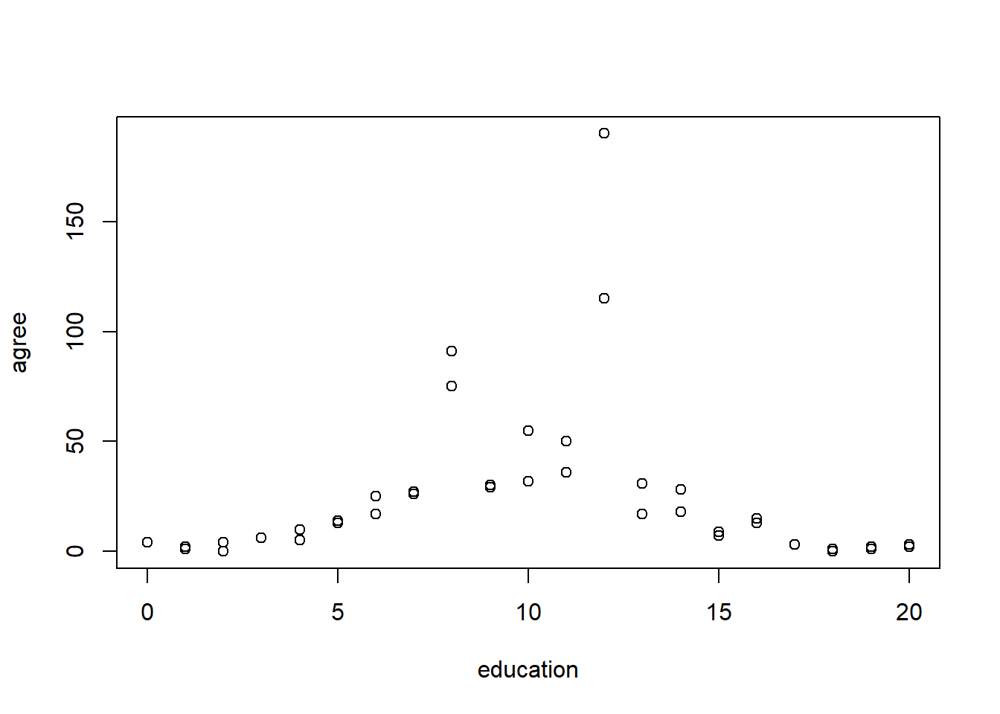
plot(x=education,y=percentage_agree,xlab="Years of Education",ylab="Percent who agree")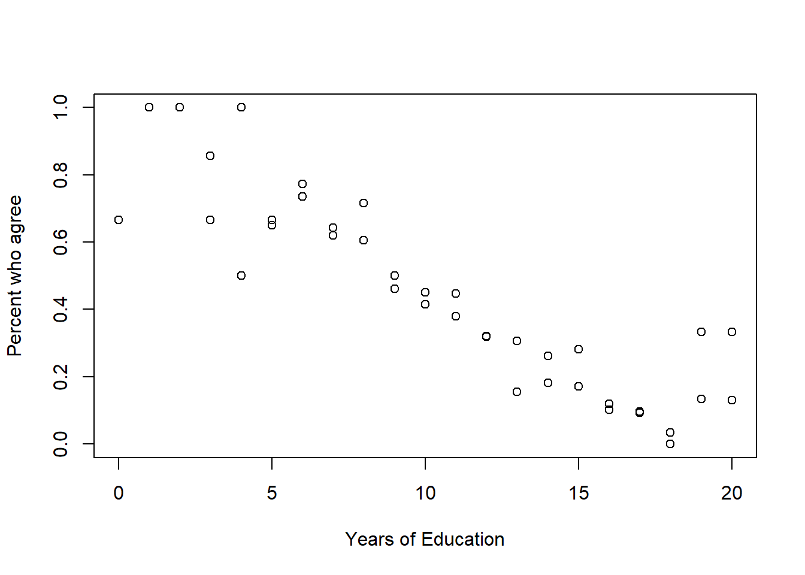
detach(womensrole)
## Continuous predictor -> continuous Outcome
fit.object <- lm(data=womensrole,percentage_agree ~ education)
summary(fit.object)
#>
#> Call:
#> lm(formula = percentage_agree ~ education, data = womensrole)
#>
#> Residuals:
#> Min 1Q Median 3Q Max
#> -0.2299 -0.0811 -0.0309 0.0895 0.2963
#>
#> Coefficients:
#> Estimate Std. Error t value Pr(>|t|)
#> (Intercept) 0.89655 0.04056 22.1 <2e-16 ***
#> education -0.04298 0.00343 -12.5 3e-15 ***
#> ---
#> Signif. codes: 0 '***' 0.001 '**' 0.01 '*' 0.05 '.' 0.1 ' ' 1
#>
#> Residual standard error: 0.132 on 39 degrees of freedom
#> (1 observation deleted due to missingness)
#> Multiple R-squared: 0.801, Adjusted R-squared: 0.796
#> F-statistic: 157 on 1 and 39 DF, p-value: 2.98e-15
cor(womensrole$education,womensrole$percentage_agree,use="pairwise.complete")
#> [1] -0.895
plot(womensrole$education,womensrole$percentage_agree)
abline(fit.object, col = "red")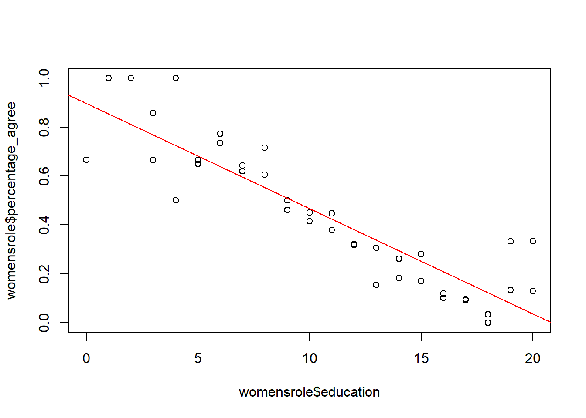
## predict
### at what levels of education do you want estimated agreement?
new.df <- data.frame(education=c(0, 6, 12))
predict(fit.object, new.df)
#> 1 2 3
#> 0.897 0.639 0.381
## Categoreical predictor -> continuous Outcome
fit.object <- lm(data=womensrole,percentage_agree ~ sex)
summary(fit.object)
#>
#> Call:
#> lm(formula = percentage_agree ~ sex, data = womensrole)
#>
#> Residuals:
#> Min 1Q Median 3Q Max
#> -0.4676 -0.2858 -0.0211 0.2004 0.5504
#>
#> Coefficients:
#> Estimate Std. Error t value Pr(>|t|)
#> (Intercept) 0.4496 0.0644 6.98 2.3e-08 ***
#> sexFemale 0.0179 0.0922 0.19 0.85
#> ---
#> Signif. codes: 0 '***' 0.001 '**' 0.01 '*' 0.05 '.' 0.1 ' ' 1
#>
#> Residual standard error: 0.295 on 39 degrees of freedom
#> (1 observation deleted due to missingness)
#> Multiple R-squared: 0.000971, Adjusted R-squared: -0.0246
#> F-statistic: 0.0379 on 1 and 39 DF, p-value: 0.847
plot(womensrole$sex,womensrole$percentage_agree)
abline(fit.object, col = "red")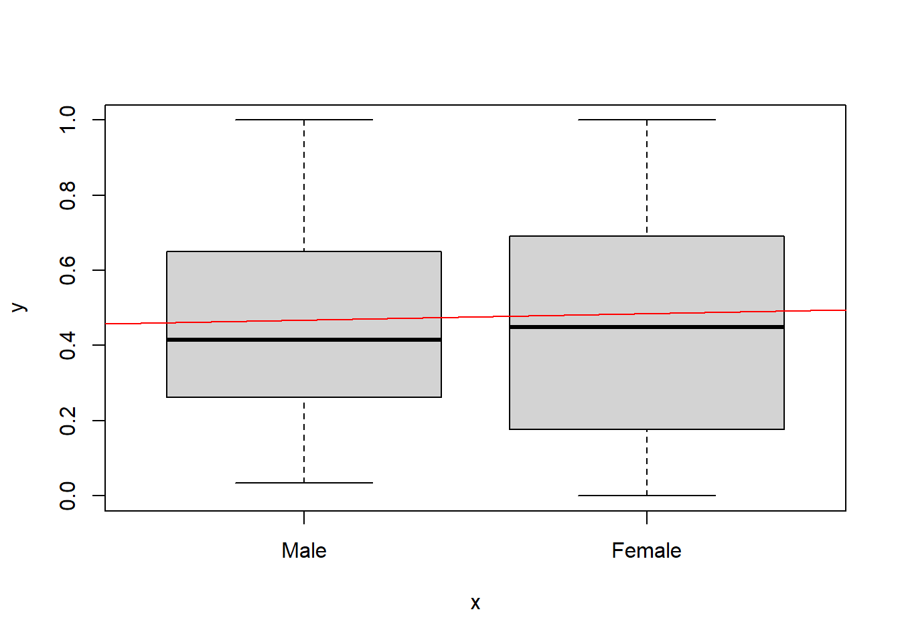
## continuous predictor -> catergorical Outcome
#
#Predict classification of being "short movie" from length of running time
options(scipen=10) # to remove scientific notation from print out
fit.object <- glm(data=movies,as.factor(Short) ~ length,family=binomial())
#> Warning: glm.fit: fitted probabilities numerically 0 or 1 occurred
summary(fit.object)
#>
#> Call:
#> glm(formula = as.factor(Short) ~ length, family = binomial(),
#> data = movies)
#>
#> Deviance Residuals:
#> Min 1Q Median 3Q Max
#> -4.592 -0.006 -0.002 0.000 8.490
#>
#> Coefficients:
#> Estimate Std. Error z value Pr(>|z|)
#> (Intercept) 10.79235 0.28567 37.8 <2e-16 ***
#> length -0.24966 0.00621 -40.2 <2e-16 ***
#> ---
#> Signif. codes: 0 '***' 0.001 '**' 0.01 '*' 0.05 '.' 0.1 ' ' 1
#>
#> (Dispersion parameter for binomial family taken to be 1)
#>
#> Null deviance: 51866.5 on 58787 degrees of freedom
#> Residual deviance: 1721.5 on 58786 degrees of freedom
#> AIC: 1726
#>
#> Number of Fisher Scoring iterations: 12
plot(as.factor(movies$Short),movies$length)
abline(fit.object, col = "red")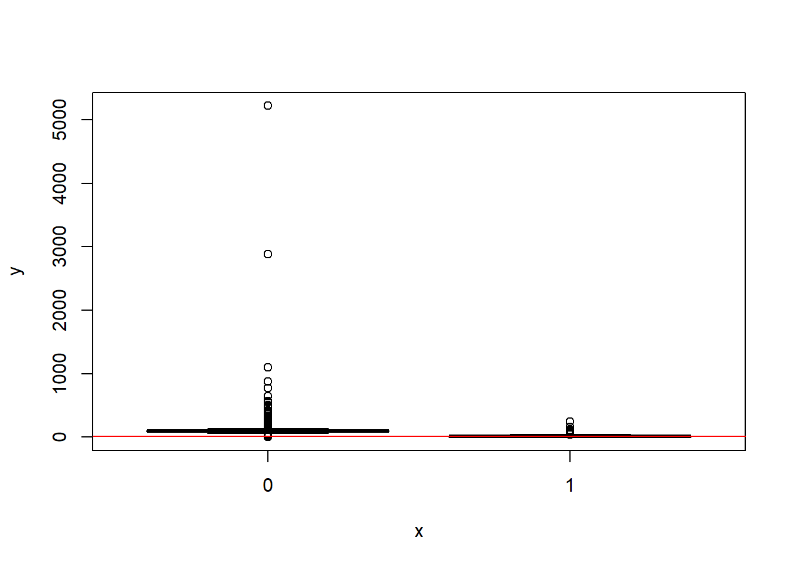
exp(coef(fit.object))
#> (Intercept) length
#> 48647.045 0.779
## catergorical predictor -> catergorical Outcome
#
#Predict classification of being "short movie" from whether it is an animated film or not
fit.object <- glm(data=movies,as.factor(Short) ~ as.factor(Animation),family=binomial())
summary(fit.object)
#>
#> Call:
#> glm(formula = as.factor(Short) ~ as.factor(Animation), family = binomial(),
#> data = movies)
#>
#> Deviance Residuals:
#> Min 1Q Median 3Q Max
#> -1.929 -0.494 -0.494 -0.494 2.079
#>
#> Coefficients:
#> Estimate Std. Error z value Pr(>|z|)
#> (Intercept) -2.0396 0.0133 -152.8 <2e-16 ***
#> as.factor(Animation)1 3.7313 0.0473 78.8 <2e-16 ***
#> ---
#> Signif. codes: 0 '***' 0.001 '**' 0.01 '*' 0.05 '.' 0.1 ' ' 1
#>
#> (Dispersion parameter for binomial family taken to be 1)
#>
#> Null deviance: 51866 on 58787 degrees of freedom
#> Residual deviance: 42536 on 58786 degrees of freedom
#> AIC: 42540
#>
#> Number of Fisher Scoring iterations: 4
exp(coef(fit.object))
#> (Intercept) as.factor(Animation)1
#> 0.13 41.7364.1 Descriptive Statistics
64.1.1 Measures of Central tendency / location
- Central tendency aims to capture the center of the distribution.
# Display the normal distributions with various means
x <- seq(-80, 80, length=1000)
hx <- dnorm(x)
colors <- c("red", "blue","green", "purple", "black")
plot(x, hx, type="l", lty=2, xlab="x value",ylab="Density", main="Distributions with Different Means",xlim=c(-7, 7))
location<-c(2,4,-2,-4)
labels=paste0("Mean = ",location)
labels[length(labels)+1]="Mean = 0"
for (i in 1:length(location)){
lines(x, dnorm(x,mean=location[i]), lwd=1, col=colors[i])
}
legend("topright", inset=.05, title="Distributions",
labels, lwd=2, lty=c(1, 1, 1, 1, 2), col=colors)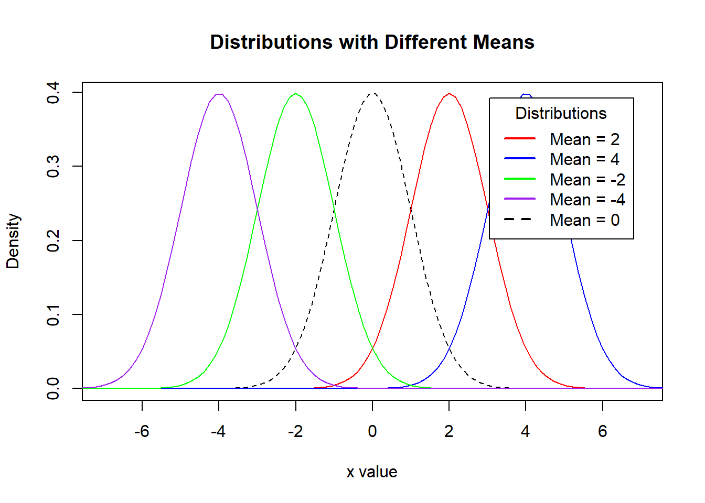
64.2 Specific Measures of Central Tendency
- Measures of Central Tendency
- Mean
- Median
- Mode
64.2.1 Central tendency: Mean
- Mean (\(\mu\); \(\bar{X}\))
- arithmetic average
- \(\bar{X}\) is used for samples
- Mu (\(\mu\)) is used for population
\(\bar{X}= \frac{1}{n} \sum^{n}_{i=1}x_{i}\)
- Properties
- Is the balance point of the distribution (in terms of center of mass) \(\sum^{n}_{i=1}(x_{i}-\bar{x})=0\)
- Least squares property
- The sum of squared deviations about the mean is small
- highly sensitive to outliers (extreme scores)
- (weakness; it means that the mean is not so good as a measure of central tendency in highly skewed distributions)
- Is not a robust statistic (low robust = sensitive to outliers; high robust = not sensitive to outliers)
- Very good with quantitative data (interval and ratio data,
- especially bell shaped distributions)
- Very popular statistic
library(pscl)
data(prussian)
#horse kick fatalities by year
prussian$y
#> [1] 0 2 2 1 0 0 1 1 0 3 0 2 1 0 0 1 0 1 0 1 0 0 0 2 0 3 0 2 0 0 0 1 1 1 0 2 0
#> [38] 3 1 0 0 0 0 2 0 2 0 0 1 1 0 0 2 1 1 0 0 2 0 0 0 0 0 1 1 1 2 0 2 0 0 0 1 0
#> [75] 1 2 1 0 0 0 0 1 0 1 1 1 1 0 0 0 0 1 0 0 0 0 1 1 0 0 0 0 0 0 2 1 0 0 1 0 0
#> [112] 1 0 1 1 1 1 1 1 0 0 0 1 0 2 0 0 1 2 0 1 1 3 1 1 1 0 3 0 0 1 0 1 0 0 0 1 0
#> [149] 1 1 0 0 2 0 0 2 1 0 2 0 1 0 0 0 1 0 0 1 0 0 0 0 1 0 0 0 1 1 0 1 0 0 0 0 0
#> [186] 2 1 1 1 0 2 1 1 0 1 2 0 1 0 0 0 0 1 1 0 1 0 2 0 2 0 0 0 0 2 1 3 0 1 1 0 0
#> [223] 0 0 2 4 0 1 3 0 1 1 1 1 2 1 3 1 3 1 1 1 2 1 1 3 0 4 0 1 0 3 2 1 0 2 1 1 0
#> [260] 0 0 1 0 0 0 0 0 1 0 1 1 0 0 0 2 2 0 0 0 0
variable<-prussian$y
# Mean
mean(variable)
#> [1] 0.764.2.2 Central Tendency: Median
- Median (Md)
- Def: central score in a distribution
- If n is odd then
- Med = value of the \(\frac{n+1}{2}\) item term.
- If n is even then
- Med = average of the \(\frac{n+}{2}\) and \(\frac{n+1}{2}\) item terms.
- If n is odd then
- Properties
- Balance point of scores
- Highly robust to outliers (less sensitive than the mean to outliers)
- Sum of absolute deviations is smaller than any other constant (c) \(\sum^{n}_{i=1}(\left|X-c\right|)\)
- Often used for ordinal data
#Median
median(variable)
#> [1] 0
# By hand
# Sample Size?
(sample.size=length(variable))
#> [1] 280
# Even or Odd
## Test if number is divisible by 2.
## If yes, then even
## Else, is odd
sample.size %% 2 == 0
#> [1] TRUE
# Sort our values
variable=sort(variable)
# if odd, grab the midpoint value sample size / 2
variable[sample.size/2]
#> [1] 0
# if even grab the average of the midpoint values sample size / 2 and sample size+1 / 2
(variable[sample.size/2] + variable[1+sample.size/2])/2
#> [1] 064.2.3 Mode
- Mode: most common score
- Local modes are the highest point with a subset of the distribution, there can be multiple ones
#Mode
mode(variable) # That's not mode!
#> [1] "numeric"
# Function to examine mode
Mode <- function(x) {
ux <- unique(x) #finds all unique values
ux[which.max(tabulate(match(x, ux)))] #returns the value which is most frequent
}
Mode(variable)
#> [1] 064.3 Relationship between mean, median, and mode
- When we have a symmetric unimodal distribution
- Mean=median=mode
- positively skewed
- mode < median < mean
- negatively skewed
- mean < median < mode
knitr::include_graphics("img/mmmskew.jpg")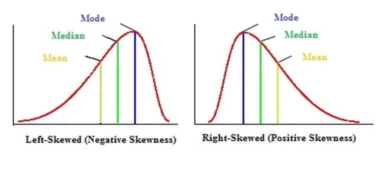
## summary
hist(variable)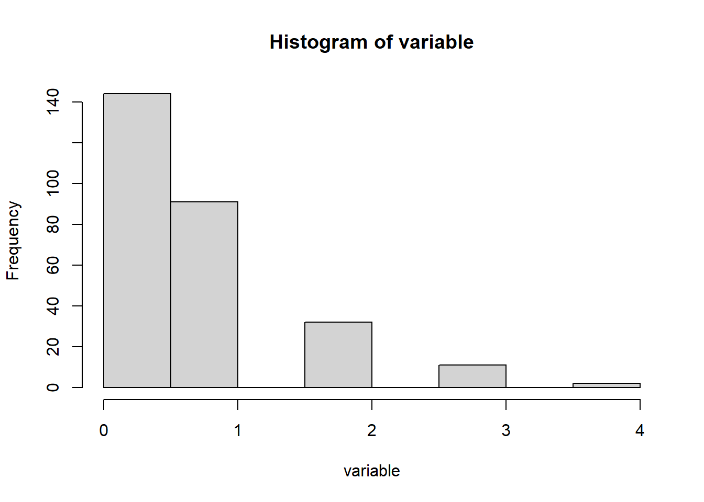
library(Hmisc)
describe(variable)
#> variable
#> n missing distinct Info Mean Gmd
#> 280 0 5 0.828 0.7 0.8752
#>
#> lowest : 0 1 2 3 4, highest: 0 1 2 3 4
#>
#> Value 0 1 2 3 4
#> Frequency 144 91 32 11 2
#> Proportion 0.514 0.325 0.114 0.039 0.00764.4 Variability/spread
- Variability describes how spread out the data are from that center
- Low variance has a less wide distribution, with the bulk of the mass in the center
- High variance has a very wide distribution, bulk of distribution is spread out
# Display the normal distributions with various standard deviations
plot(x, hx, type="l", lty=2, xlab="x value",
ylab="Density", main="Distributions with Different Standard Deviations",xlim=c(-7, 7))
spread=c(.5,2,4)
labels=paste0("SD = ",spread)
labels[length(labels)+1]="SD = 1"
for (i in 1:length(spread)){
lines(x, dnorm(x,sd=spread[i]), lwd=1, col=colors[i])
}
legend("topright", inset=.05, title="Distributions",
labels, lwd=2, lty=c(1, 1, 1, 1, 2), col=colors[c(1:3,5)])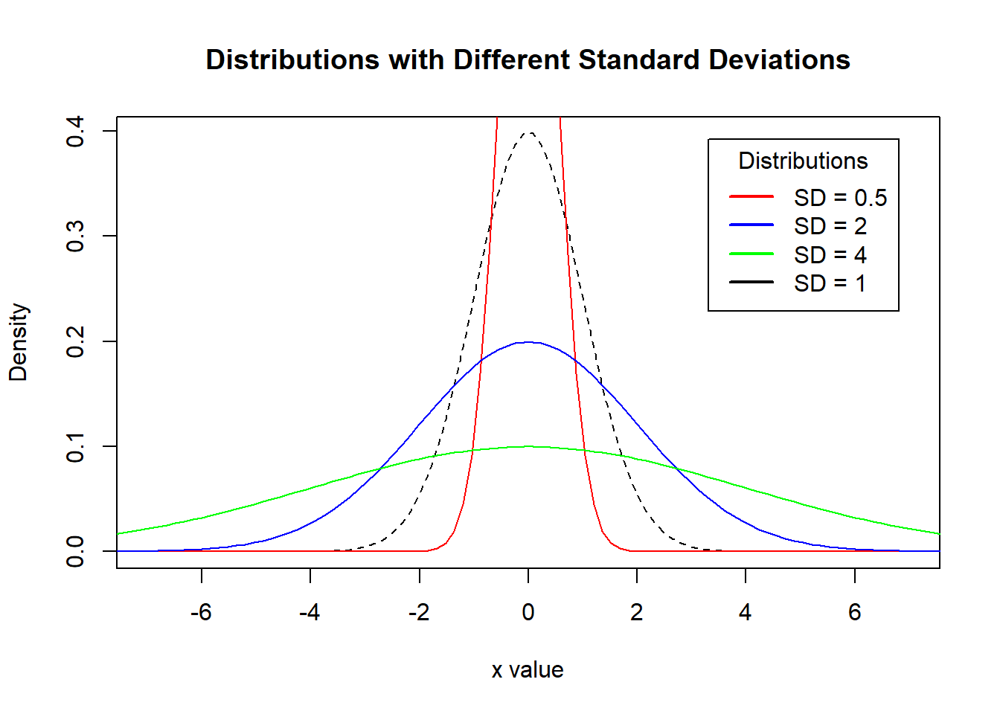 ## Measures of Spread around the Median
- Range
- maximum value - minimum value
- \(max(x_{i})-min(x_{i})\)
- Non-robust to outliers
- Quartiles
- Lower quartile (Q1), 25th percentile
- Second quartile (Q2), 50th percentile / median
- Upper quartile (Q3), 75th percentile
- Interquartile Range (IQR)
- Q3-Q1
- Sometimes called h-spread; h = hinges
64.4.1 R Examples
# Range
range(variable)
#> [1] 0 4
max(variable) -min(variable)
#> [1] 4
# 5 Number Summary / Quartiles
summary(variable)
#> Min. 1st Qu. Median Mean 3rd Qu. Max.
#> 0.0 0.0 0.0 0.7 1.0 4.064.5 Spread around the Mean
Variance (\(\sigma^{2}\);\(s^{2}\))
- Measure of spread around the mean
- Goal of the measure to use every score
\(\sigma^{2}\) = \(\frac{\sum^{n}_{i=1}(x_{i}-\mu)^{2}}{N}\)
\(s^{2}\) = \(\frac{\sum^{n}_{i=1}(x_{i}-\bar{x})^{2}}{n-1}\)
Standard Deviation (\(\sigma\);s)
- \(\sigma\) = \(\sqrt{\sigma^{2}}\)
- s = \(\sqrt{s^{2}}\)
64.6 R Examples
# Variance
var(variable)
#> [1] 0.763
# Standard Deviation
sqrt(var(variable))
#> [1] 0.873
sd(variable)
#> [1] 0.87364.7 Bessel’s Correction
\(s^{2}\) is nearly the average squared deviation
\(s^{2}\) uses n-1 instead of N
- Otherwise we get biased estimates
- This adjustment is called Bessel’s correction
In our formula, we are using the sample mean (x) instead of the true mean (\(\mu\))
- this results in underestimating each \(x_{i} − \mu\) by \(x − \mu\).
Properties
- Std is in raw score units
- Both the variance and standard deviation are highly NOT robust